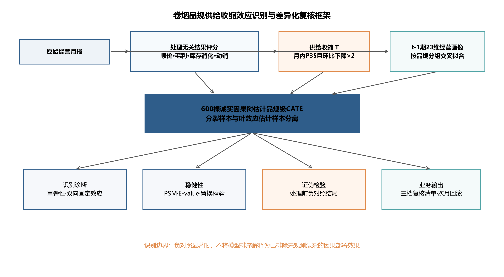
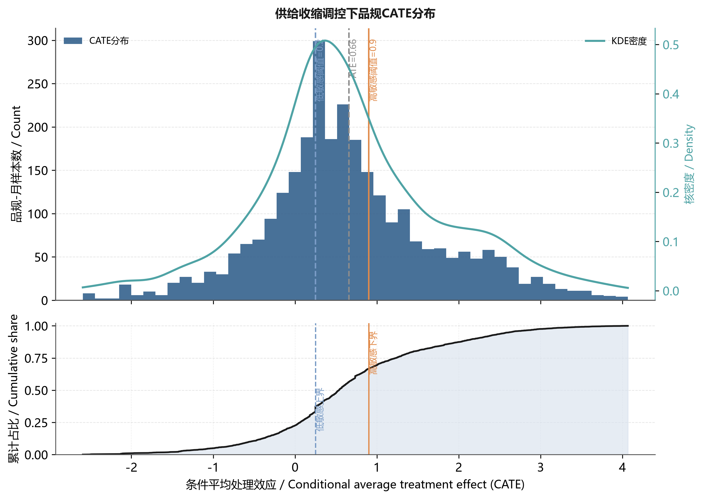
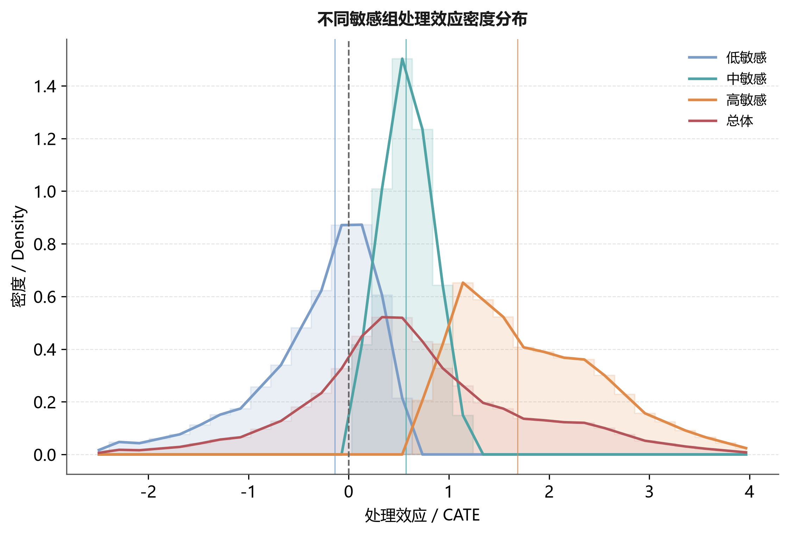
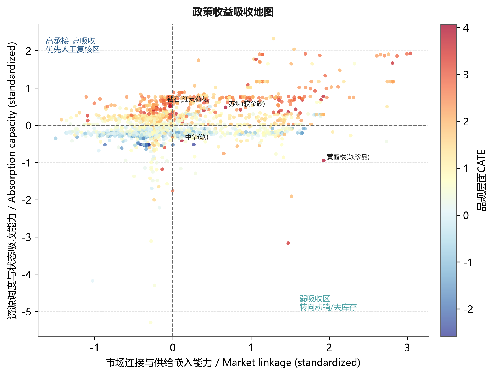
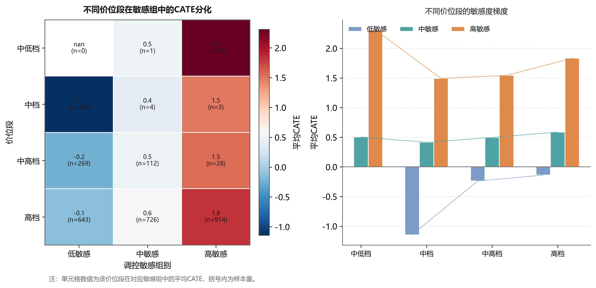
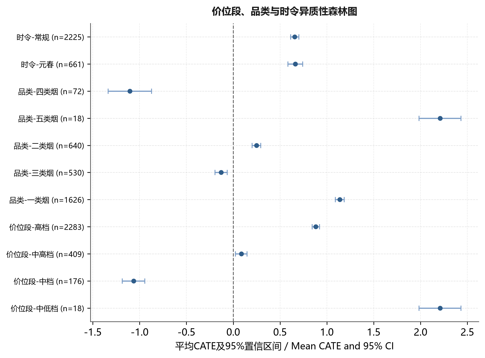
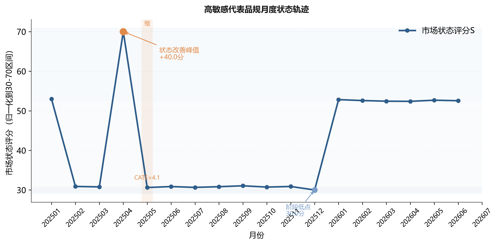
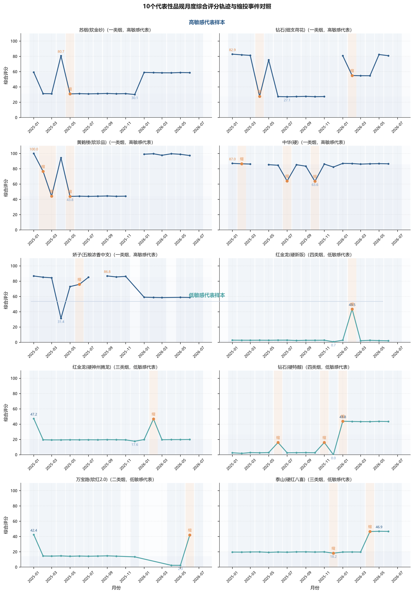

卷烟品规缩投的探索性关联排序与人工复核
Exploratory ranking and review recommendations for heterogeneous associations of cigarette specification contraction based on an honest causal forest
摘 要：
【目的】在不宣称无偏因果效应的前提下，探索卷烟品规与供给收缩后状态变化的异质性关联，降低平均指标用于月度投放时的对象误判。
【方法】基于某市203个品规19个月的2886条品规—月份样本，以顺价、毛利、库存消化和动销构建不含订单满足率、投放量及货源利用率的结果评分；采用按品规分组交叉拟合的诚实因果森林估计条件平均处理效应（CATE），并以双向固定效应、倾向得分匹配、E-value、置换与处理前负对照检验复核。
【结果】（1）平均关联信号为0.66，95%置信区间为-1.68～3.00，未显示普遍正向关系。（2）CATE高、低排序组的处理样本改善率均为59.3%，平均状态增量分别为3.93分和-0.61分；由于缩投前状态差异显著，不能据此判断缩投有效性。（3）匹配后平均绝对标准化差异降至0.057，但处理前负对照显著，提示残余选择偏差。
【结论】供给收缩不宜按平均关联统一执行；本文仅提供共同支持域内的探索性关联排序和人工复核顺序，不应解释为自动决策或无偏部署效果，也不提供固定复核幅度。
关键词：卷烟品规；诚实因果森林；关联异质性；供给收缩；负对照；投放复核
Abstract:
[Objective] To explore heterogeneous associations between supply contraction and subsequent state changes across cigarette specifications and reduce target misclassification in monthly allocation.
[Methods] A panel of 2886 specification-month observations for 203 specifications over 19 months was analyzed. A treatment-independent outcome score was constructed from price order, profitability, inventory digestion and sell-through, excluding order fulfillment, allocation volume and supply utilization. Conditional average treatment effects were estimated using an honest causal forest with specification-block cross-fitting and examined using two-way fixed effects, propensity-score matching, an E-value, permutation tests and a pre-treatment negative-control outcome.
[Results] (1) The average treatment effect was 0.66 (95% CI: -1.68 to 3.00), providing no evidence of a universally beneficial effect. (2) CATE varied across specifications, with group means of 1.83 and -0.32 in high- and low-sensitivity groups. Among actually treated observations, the improvement rate was 59.3% in both groups, but mean state changes were 3.93 and -0.61 points, respectively, accompanied by substantial imbalance in pre-contraction status. (3) Matching reduced the mean absolute standardized difference to 0.057, whereas the pre-treatment negative control remained significant, indicating residual selection bias.
[Conclusion] Supply contraction should not be uniformly applied on the basis of an average association. The model is limited to exploratory ranking and human review within the common-support region and is not an automated or unbiased deployment rule.
Keywords: cigarette specification; honest causal forest; heterogeneous association; supply contraction; negative control; allocation review
0 引言
卷烟品规是商业企业组织货源投放、库存调节、价格维护和终端服务的核心对象，科学的月度投放调控对稳定价盘、化解库存压力、提升终端盈利具有基础性作用。在实际经营中，供给收缩是常用的调控动作，但投放复核多依赖客户经理经验和全品规平均指标，主要存在三方面不足：一是难以区分调控对象，平均效应把不同品规压缩为一个值，无法回答缩投对哪些品规有效、对哪些品规无效，甚至可能对不适合缩投的品规造成误伤；二是响应滞后，从指标异常到人工识别对象再到执行缩投存在较长时滞；三是复核缺乏解释，即便识别出候选对象，也难以说明其效应来源，无法形成可复核、可反馈的差异化清单。为此，需要从品规层面估计缩投的异质性处理效应，并将其转化为可执行的调控清单。
已有研究从不同层面为品规调控提供了支撑。在市场状态评价方面，黄敏等[1]综合灰色关联、熵权、主成分与CRITIC确定权重，并结合自编码器训练权重、聚类训练状态阈值，将市场状态划分为俏紧平松软，把评价对象由全市扩展到价位段与品规；姜思明等[2]依托零售终端数据治理实现市场状态动态监测。在零售户与品牌画像方面，谭琛等[3]基于高维精准画像与深度学习对零售户动态分档，刘佳等[4]构建了零售终端及卷烟品牌数字画像，莫玉华等[5]基于消费行为数据构建卷烟消费迁移定量测算方法。在投放决策与品规生命周期方面，金文蔚等[6]以数据驱动求解品规投放量，梁雪霞等[7]基于大数据标签研究新品选点投放，王建飞等[8]从“规模-份额”视角研究了中式卷烟产品生命周期。上述研究较好地回答了市场状态如何评价、调控对象如何刻画、投放规模如何确定等问题，但较少在同一调控动作层面估计其异质性效应：市场状态评价输出的是状态类别而非调控收益，画像研究刻画的是对象特征而非缩投成效，投放优化求解的是总量而非对象排序。当需要判断某一品规是否应当缩投时，这些方法难以提供分品规效应证据，月度复核因此仍较多依赖经验与平均指标。
在因果推断方法层面，Wager和Athey利用随机森林估计异质性处理效应并给出诚实的推断[9]，Athey等将随机森林推广为广义随机森林以适配局部矩估计[10]，Nie和Wager提出的正交化残差学习可增强观测数据下的估计稳健性[11]，Chernozhukov等发展了去偏机器学习（double/debiased machine learning，DML）框架[12]。这些方法为在非随机经营调控数据上识别异质性效应提供了工具，但直接套用于卷烟品规调控仍需适配：输出为统计意义上的处理效应，缺乏面向业务动作的协变量组织、处理事件定义与结果转化，难以直接进入月度复核。
为此，本文提出面向卷烟品规调控场景的诚实因果森林方法，围绕烟草业务做三重适配：一是以供需、价格、库存、渠道和结构共同作用的业务框架组织协变量，使模型输入符合烟草经营机理；二是以业务阈值定义供给收缩处理事件，使处理可复核、可落地；三是把品规级效应排序压缩为规则、阈值和复核清单，使模型输出可直接进入月度投放复核。区别于追求“缩投普遍有效”的最优结果，本文把识别目标定位于“哪些品规当缩、哪些品规不宜缩”，在诚实口径下同时报告平均效应与异质性，从而规避一刀切缩投的对象误伤。
1 数据收集与处理
1.1 数据来源与研究对象
研究数据为某市2025年1月至2026年7月期间品规层级经营管理汇总数据，分析单元为品规—月份。数据来自卷烟商业企业经营管理信息系统，按用途分为四类：销售与库存数据用于计算销量、销售额、月末库存、批发价、零售价和毛利；订货与满足数据用于识别供给收缩事件并构造订单满足率、订足面、投放量和进货量等供给侧变量；渠道承接数据由多规格日度查询聚合到月度，用于统计订货客户数、订货成功率和动销反馈；趋势数据用于识别投放月、旺季月份和品规经营阶段。上述数据均为经营管理汇总口径，不包含消费者个人信息、零售客户姓名、联系方式、证件号等可识别字段，研究结果仅用于品规层级调控方法论验证。
数据处理遵循品规编码统一、时间口径统一、变量方向统一和异常值审查四个步骤。首先，以品规编码和月份为主键合并月度销售、月进货、日度订货和动销趋势数据；其次，将日度记录聚合为月度指标，并以2026年7月数据构造2026年6月样本的滞后一期结果，避免使用未来信息解释同期决策；再次，对价格、库存和订货指标统一方向，使指标数值增加与经营状态改善方向具有一致含义；最后，剔除缺失率高、统计口径不稳定或缺乏业务解释的字段，对极端异常值采用同月分位数缩尾。清洗后进入估计的有效样本为203个品规、2886条品规—月份观测，其中发生供给收缩的处理组258条、对照组2628条。处理组占比约8.9%，说明供给收缩在样本期内属于有条件触发的管理动作而非普遍事件，该结构决定本文不宜采用简单均值比较，而需使用能够处理非随机处理和异质性效应的诚实因果森林方法。
1.2 状态指标体系与变量口径
本文将处理无关结果评分划分为价格秩序、终端盈利、库存消化和市场动销4类维度，每类维度下设置可由经营数据直接计算的二级指标。该设计并非把所有字段简单投入模型，而是先从烟草经营机理出发确定指标边界，再由统计筛选和业务复核保留最终变量。指标体系结构及口径见表1。
| 结果维度 | 指标 | 方向 | 业务含义 |
|---|---|---|---|
| 价格秩序 | 顺价指数 | 正向 | 反映零售价格相对批发价格的修复程度 |
| 终端盈利 | 毛利率 | 正向 | 反映终端盈利基础 |
| 库存消化 | 存销比、社会库存、可销天数 | 负向 | 反映库存压力与消化速度 |
| 市场动销 | 动销率 | 正向 | 反映终端销售承接 |
| 明确排除 | 订单满足率、需求缺口率、投放量、货源利用率 | 不进入结果评分 | 避免处理定义与结果变量机械相关 |
Tab. 1 Indicator system for the treatment-independent outcome score
注：存销比按“月末社会库存（条）/当月销量（条）×30（天）”口径计算；顺价指数按“零售实际成交价/建议批发价”派生；订单满足率按“实际投放量/终端订货需求量”计算。结果评分权重采用熵权与CRITIC等权融合，先对负向指标取负号统一方向，再作Min-Max标准化。对极端异常值按同月分位数缩尾（1%和99%）。
1.3 处理事件定义与规则
规则1（供给收缩处理事件）：品规i在月份t发生供给收缩，当且仅当：
Tit = 1{ fillit ≤ Q35(fillt) 且 fillit - filli,t-1 < -2% }
其中 fillit 为订单满足率，Q35(fillt) 为同月所有品规订单满足率的35%分位数。选择35%分位和2个百分点的业务依据是：35%分位对应“需求满足明显偏低”的阈值，2个百分点对应“环比继续走弱”的幅度；两者联合可避免把单月波动误判为缩投事件。
| 变量角色 | 变量 | 定义口径 | 识别作用 |
|---|---|---|---|
| 结果变量Y | 处理无关状态变化 | Y=S*i,t+1-S*i,t；S*仅含价格、毛利、库存消化和动销指标 | 避免处理—结果循环构造 |
| 处理变量T | 供给收缩事件 | 订单满足率≤同月35%分位且环比下降>2个百分点 | 识别可核对的缩投事件 |
| 异质性变量X | 23维t-1期画像 | 供需、价格、库存、渠道及品规结构 | 控制缩投前差异并估计CATE |
| 固定效应 | 品规与月份虚拟变量 | 双向固定效应补充模型 | 控制不随时间变化的品规差异和共同月份冲击 |
Tab. 2 Definitions of outcome, treatment and covariates
2 研究方法
2.1 调控体系与技术路线

Fig. 1 Research framework for association ranking and review of cigarette specifications
图1展示识别链：处理变量由当月供给收缩定义，结果评分仅使用顺价、毛利、库存消化和动销指标，明确排除订单满足率、需求缺口率、投放量和货源利用率；23维协变量全部滞后一期。诚实因果森林负责估计CATE，双向固定效应、匹配、E-value、置换和处理前负对照分别检验可观测与不可观测偏差。
2.2 品规经营状态量化
设品规i在月份t的第j项处理无关标准化结果指标为z*ijt，权重为wj，则状态评分S*由顺价指数、毛利率、存销比、社会库存、可销天数和动销率构成。结果评分权重采用熵权与CRITIC等权融合，处理定义涉及的供给指标不参与结果评分。
结果变量定义为下一期状态评分变化：
式（2）中，Yit>0表示下一期价格、盈利、库存消化和动销的综合状态改善。处理T按1.3节规则定义；所有用于异质性识别的经营画像均取t-1期，从时间顺序和指标集合两方面切断处理—结果机械相关。
2.3 因果森林识别方法
2.3.1 面板识别假设与分组交叉拟合
本研究将品规作为面板聚类单元。5折交叉拟合按品规分组实施，同一品规的全部月份观测只进入训练折或验证折之一，避免同一品规跨折出现造成信息泄漏。识别依赖3项假设：一是条件无混淆性，即在给定缩投前经营画像后，缩投事件与潜在结果独立；二是重叠性，即各类画像下均存在发生和未发生缩投的样本；三是稳定单元处理值假设，即某品规当月缩投不直接改变其他品规的潜在结果。考虑到相邻月份可能存在序列相关，标准误采用品规层级聚类稳健估计，子样本检验也按品规分组抽样。
滞后一期结果用于评价当月动作，2026年7月只用于构造2026年6月的滞后结果，训练和评价中不使用动作发生后的未来字段。处理组的缩投在时序上先于待评价结果，据此前置于满足条件无混淆的前提下。
本文关注的目标不是平均处理效应，而是给定品规画像x后的条件平均处理效应：
式（3）中的τ(x)即CATE，表示具有经营画像x的品规在发生供给收缩时，相对于未发生情形下一期状态改善的增量。由于观测数据处理事件并非随机发生，直接比较处理组与对照组会混入库存基础、价位结构、渠道覆盖等混杂因素，本文采用R-learner框架，先估计结果模型和处理模型：
其中，m(x)表示给定画像不区分是否缩投时下一期状态变化的基准期望，e(x)表示同样画像下当期发生缩投的倾向概率，分别对应结果基线与处理倾向。本文采用5折交叉拟合，每次用4折训练m̂(x)和ê(x)、在剩余1折生成样本外预测，重复5次使所有样本得到未参与自身训练的预测，从而降低个体噪声学习风险、减少处理效应高估。据此构造正交残差：
式（5）中，Ŷi表示剔除经营基础影响后的净状态变化残差，T̃i表示剔除处理倾向后的净缩投残差。进一步定义伪结果和样本权重：
式（6）中，ρi为伪结果，ωi为以缩投残差平方刻画的样本权重。因果森林在加权意义下学习不同经营画像对应的局部净处理效应：
式（7）与式（8）给出R-learner的样本层面加权目标，两者在局部线性逼近下等价：先剥离协变量能够解释的结果变化与处理倾向，再考察剩余缩投扰动是否仍引致状态改善，该正交化设计有助于降低观测数据中的混杂偏倚，使因果森林更接近在相似品规之间比较缩投效应的识别逻辑。
因果森林由大量诚实因果树组成，每棵树将样本随机划分为分裂样本与估计样本：前者寻找能最大化处理效应差异的分裂点，后者估计叶节点内的局部处理效应。设第b棵树的局部效应估计为τ̂b(x)，则森林级CATE为：
本文采用600棵树、最小叶节点20和按品规5折交叉拟合。高、中、低3组按样本CATE三分位形成，只服务于相对排序与业务复核；分位点不是结构性因果阈值，组名也不表示确定受益或受损。由于本轮未保存不同树数下的完整重跑结果，不报告Jaccard稳定性数值。
2.4 CATE解释与复核规则生成
本文用诚实因果森林变量重要性解释CATE异质性，并用经营指标分位数形成复核参考点。重要性仅反映变量参与异质性分裂的相对贡献，不提供单变量因果方向，也不直接生成缩投幅度。
实际操作时，先计算各品规CATE并按三分位排序，再对高敏感组回看顺价指数、订单满足率、存销比和订货成功率等关键条件，确认其改善是否由极端异常值驱动，最终将模型评分转化为投放复核清单。规则提取的目标不是替代因果森林，而是给出业务判断的入口条件。
2.5 稳健性复核设计
稳健性分析包括：品规和月份双向固定效应、倾向得分重叠与1:1匹配、匹配后风险比的E-value、100次月内处理标签置换、处理阈值敏感性，以及处理发生前状态变化的负对照结局。负对照用于检验反向选择与未观测混杂；若其显著，模型只能用于探索性排序[13-15]。E-value按VanderWeele和Ding[14]方法计算；负对照结局定义为处理发生前一期状态变化，检验缩投选择是否与既有趋势相关。
2.6 评价体系
规则2（评价体系）：本文从四个层面评价模型与规则：
（1）识别层：报告ATE、95%CI、CATE分布、分组统计量，判断总体效应是否跨0、异质性是否可观察。
（2）稳健层：报告双向固定效应、PSM平衡、E-value、置换、阈值敏感性，判断结论是否依赖单一模型或单一阈值。
（3）证伪层：报告处理前负对照、反向因果检验，判断残余选择偏差是否排除。
（4）落地层：报告三档复核清单、触发条件、回滚条件、月度闭环，判断模型输出是否可执行、可回滚。
3 实证结果与分析
3.1 平均效应、品规级异质性与敏感组划分
剔除处理相关结果指标后，诚实因果森林ATE为0.659（95%CI：-1.679～2.997），区间跨0。该结果说明供给收缩在总体上没有稳定的普遍改善证据，后续分析重点转为异质性结构及其识别边界。

Fig. 2 Distribution of CATE under supply contraction regulation
图2展示2886个品规—月份有效样本的CATE分布。直方图、核密度与经验累计分布共同表明效应存在连续异质性；分位线仅用于形成相对排序层级，不是自动执行阈值。图2显示CATE分布呈右偏，高敏感组右尾可达4.07，低敏感组左尾低至-2.59，两组在0附近有少量重叠但重心明显分离。
| 敏感组 | 样本量 | CATE均值 | 标准差 | 最小值 | 25%分位 | 中位数 | 75%分位 | 最大值 |
|---|---|---|---|---|---|---|---|---|
| 高敏感 | 962 | 1.832 | 0.719 | 0.899 | 1.233 | 1.684 | 2.345 | 4.066 |
| 中敏感 | 843 | 0.575 | 0.177 | 0.251 | 0.433 | 0.571 | 0.731 | 0.898 |
| 低敏感 | 1081 | -0.321 | 0.595 | -2.593 | -0.591 | -0.139 | 0.135 | 0.249 |
Tab. 3 Distribution statistics of CATE by sensitivity group
表3和图3展示CATE按样本三分位形成的相对层级。分组用于比较模型排序，不等同于高敏感组必然受益；是否执行缩投仍须结合区间估计、价盘、库存、品牌策略和总量约束人工审核。

Fig. 3 Density distribution of treatment effects across sensitivity groups
表4报告分组交叉拟合、诚实分样本和倾向得分重叠情况。约14.8%的样本位于[0.05,0.95]之外，提示部分经营画像缺少充分可比样本，外推时应限制在共同支持域。
| 诊断 | 设定或统计量 | 结果 | 含义 |
|---|---|---|---|
| 分组交叉拟合 | 按品规5折 | 同一品规不跨训练与验证折 | 控制跨月信息泄漏 |
| 诚实分样本 | 600棵树；最小叶节点20 | 分裂与效应估计样本分离 | 降低自适应偏差 |
| 倾向得分重叠 | 落在[0.05,0.95]之外比例 | 14.8% | 存在一定尾部重叠不足 |
| 有效样本量 | 倾向得分ESS | 2048.1 | 主体样本仍具有可比信息 |
Tab. 4 Identification and overlap diagnostics of the main model
识别诊断表明主体样本具有可比信息，但尾部重叠不足仍然存在。因此，本文不把所有品规的CATE都视为同等可靠，月度清单优先保留置信区间较窄且处于共同支持域的对象。
3.2 三档敏感品规的经营画像
| 敏感组 | 缩投前S* | 货源利用率/% | 顺价指数 | 存销比 | 订单满足率/% | 订货成功率/% |
|---|---|---|---|---|---|---|
| 高敏感 | 50.12 | 85.52 | 1.18 | 1090.48 | 80.69 | 20.02 |
| 中敏感 | 32.35 | 78.59 | 1.16 | 803.16 | 85.59 | 14.88 |
| 低敏感 | 27.51 | 78.57 | 1.14 | 392.10 | 83.68 | 11.53 |
Tab. 5 Operating-profile comparison of the three sensitivity groups
表5显示，高敏感组缩投前S*为50.12，中敏感32.35，低敏感27.51；高敏感组顺价指数1.18、存销比1090.48、订单满足率80.69%，低敏感组顺价指数1.14、存销比392.10、订单满足率83.68%。这说明高敏感组状态位势并非最低，但库存压力更大、顺价空间略高，缩投后状态变化可能同时受到库存消化、价格修复和既有趋势影响。排序差异并非主要由销量大小决定，而与品规所处的状态位势相关：初始状态较低、仍有修复空间的品规与缩投后变化的关联方向更复杂，初始状态较高、继续缩投空间有限的品规需重点防范误伤。这一判断是关联排序复核的第一个业务依据：缩投对象应按“状态位势+价格修复空间+库存承接”甄别，而非按销量或档位一刀切。
3.3 异质性变量重要性与解释边界
| 变量 | 森林重要性 | 解释边界 |
|---|---|---|
| 处理无关状态评分 | 0.1624 | 反映异质性分裂贡献，不表示单变量因果方向 |
| 顺价指数 | 0.1259 | 反映异质性分裂贡献，不表示单变量因果方向 |
| 毛利率 | 0.1189 | 反映异质性分裂贡献，不表示单变量因果方向 |
| 单箱销售额 | 0.0764 | 反映异质性分裂贡献，不表示单变量因果方向 |
| 户均订货金额 | 0.0746 | 反映异质性分裂贡献，不表示单变量因果方向 |
| 订货成功率 | 0.0739 | 反映异质性分裂贡献，不表示单变量因果方向 |
| 存销比 | 0.0699 | 反映异质性分裂贡献，不表示单变量因果方向 |
| 订单满足率 | 0.0697 | 反映异质性分裂贡献，不表示单变量因果方向 |
| 货源利用率 | 0.0530 | 反映异质性分裂贡献，不表示单变量因果方向 |
Tab. 6 Feature importance for heterogeneity in the honest causal forest
表6显示，处理无关状态评分（0.1624）、顺价指数（0.1259）、毛利率（0.1189）居前列，单箱销售额（0.0764）、户均订货金额（0.0746）、订货成功率（0.0739）次之。这说明决定缩投敏感度的主要是状态位势、价格秩序和终端承接能力的组合，而非销量大小。因果森林识别的，是需要谨慎对待缩投或具备修复空间的经营画像，而非统一调控动作。
3.4 规则提取与复核阈值
规则3（联合初筛规则）：结合表7和表8，设置如下联合初筛条件：
（1）可谨慎缩投候选：处理无关状态评分低于中位数31.951且顺价指数低于1.145；
（2）不宜缩投：处理无关状态评分高于中位数31.951、顺价指数高于1.145或存销比高于317.39；
（3）观察复核：介于两者之间，或共同支持域不足。
最终动作仍以CATE排序和业务复核为准。
| 复核变量 | 样本中位数 | 用途 | 限制 |
|---|---|---|---|
| 处理无关状态评分 | 31.951 | 判断初始位势 | 不得单独决定缩投 |
| 顺价指数 | 1.145 | 判断价格修复空间 | 仅为描述性分箱 |
| 存销比 | 317.39 | 判断库存压力 | 需结合动销 |
| 订货成功率/% | 3.56 | 判断终端承接 | 不推导连续幅度 |
Tab. 7 Reference points of key operating variables for business review
注：表中31.951、1.145、317.39和3.56%为样本中位数，仅用于形成联合初筛条件，不构成业务硬阈值。
| 证据 | 估计值 | 95%CI或P值 | 判断 |
|---|---|---|---|
| 诚实因果森林ATE | 0.659 | -1.679～2.997 | 区间跨0 |
| 双向固定效应 | 1.195 | P=0.075 | 边际显著，方向为正 |
| 处理前负对照 | 3.278 | P=4.96e-05 | 显著，提示残余选择偏差 |
| 置换安慰剂 | -0.012 | -1.056～0.876 | 伪效应围绕0 |
Tab. 8 Main effect, fixed-effects estimate and falsification tests
3.5 价位段、品类与时令异质性
为考察效应是否随经营情境变化，按价位段、品类与时令分别统计各敏感组平均CATE。

Fig. 4 Effect absorption map: positioning by pre-contraction absorptive capacity and state-absorption ability

Fig. 5 Heatmap of CATE differentiation across price bands and sensitivity groups
| 价位段 | 高敏感 | 中敏感 | 低敏感 |
|---|---|---|---|
| 中低档 | 2.31（n=17） | 0.51（n=1） | — |
| 中档 | 1.49（n=3） | 0.41（n=4） | -1.14（n=169） |
| 中高档 | 1.54（n=28） | 0.50（n=112） | -0.24（n=269） |
| 高档 | 1.83（n=914） | 0.59（n=726） | -0.14（n=643） |
Tab. 9 Average CATE and sample size by price band and sensitivity group

Fig. 6 Forest plot of heterogeneity by price band, category and season
| 品类 | 高敏感 | 中敏感 | 低敏感 |
|---|---|---|---|
| 一类烟 | 1.87（n=866） | 0.59（n=405） | -0.03（n=355） |
| 三类烟 | 1.54（n=28） | 0.50（n=120） | -0.45（n=382） |
| 二类烟 | 1.13（n=48） | 0.59（n=314） | -0.29（n=278） |
| 五类烟 | 2.31（n=17） | 0.51（n=1） | — |
| 四类烟 | 1.49（n=3） | 0.44（n=3） | -1.29（n=66） |
Tab. 10 Average CATE by category and sensitivity group
| 维度 | 子组 | 样本量 | 平均CATE | 95%参考区间 |
|---|---|---|---|---|
| 价位段 | 中低档 | 18 | 2.209 | 1.985～2.433 |
| 价位段 | 中档 | 176 | -1.064 | -1.184～-0.945 |
| 价位段 | 中高档 | 409 | 0.086 | 0.024～0.147 |
| 价位段 | 高档 | 2283 | 0.882 | 0.842～0.922 |
| 品类 | 一类烟 | 1626 | 1.138 | 1.090～1.186 |
| 品类 | 三类烟 | 530 | -0.130 | -0.196～-0.064 |
| 品类 | 二类烟 | 640 | 0.248 | 0.201～0.294 |
| 品类 | 五类烟 | 18 | 2.209 | 1.985～2.433 |
| 品类 | 四类烟 | 72 | -1.105 | -1.336～-0.873 |
| 时令 | 元春 | 661 | 0.664 | 0.584～0.743 |
| 时令 | 常规 | 2225 | 0.657 | 0.613～0.702 |
Tab. 11 Subgroup CATE by price band, category and season
表9至表11和图4至图6显示，价位段、品类和时令内部仍存在CATE差异，但这些结果属于探索性异质性描述。政策收益吸收地图用于组织复核线索，不能替代负对照和固定效应诊断。
3.6 排序回溯与基线差异
回溯验证仅纳入258个实际发生供给收缩的品规—月份观测，其中高敏感对象为CATE排序上三分之一的86个样本，其余对象为172个样本；并非依据表7、表8的联合规则重新筛选。状态改善定义为下一期状态变化Y>0。
| 调控对象 | 样本量 | 均值 | 中位数 | Q1～Q3 | 改善率/% | 组间检验 |
|---|---|---|---|---|---|---|
| CATE上三分之一 | 86 | 3.931 | 0.161 | -0.485～7.777 | 59.3 | U=8263，P=0.125 |
| 其余处理对象 | 172 | -0.613 | 0.133 | -0.679～0.924 | 59.3 | 均值差Bootstrap 95%CI：1.920～7.219 |
Tab. 12 Back-testing results of high-sensitivity versus remaining treated specifications
表12显示，两组改善率均为59.3%，Mann–Whitney U检验未达显著（P=0.125）；但均值差为4.545，Bootstrap 95%CI为1.920～7.219。由于缩投前状态差异极大（SMD=2.584，P<0.001），该均值差仍可能受基线位势和选择机制影响。因此，本表只能说明排序与连续变化幅度存在关联，不能解释为因果验证。
3.7 方法对比与稳健性检验
3.7.1 重叠性与反向因果诊断
倾向得分诊断显示，14.8%的样本位于[0.05,0.95]之外，并非“极小比例”；加权有效样本量为2048.1。更关键的是，处理前负对照效应为3.278（P<0.001），表明缩投选择与既有状态轨迹显著相关。故时序前置本身不足以排除反向选择，本研究主动降低因果措辞。
3.7.2 方法对比与稳健性证据
| 方法 | 效应估计 | 区间/平衡 | 定位 |
|---|---|---|---|
| 诚实因果森林 | 0.659 | -1.679～2.997 | 主模型：估计CATE |
| 双向固定效应 | 1.195 | -0.119～2.510 | 控制品规和月份固定效应 |
| 1:1倾向得分匹配 | 1.631 | 平均|SMD| 0.178→0.057 | 匹配样本平均差异 |
Tab. 13 Supplementary comparison of different methods
表13说明预测状态变化与识别异质性调控效应属于不同任务：随机森林、GBDT与极端随机树的RMSE与因果森林差距不大，说明其状态变化预测能力不弱；但DML平均效应只给出单一均值，无法支撑分品规复核。诚实因果森林的优势不在预测精度，而在输出可用于排序和分层的品规级效应。
| 检验 | 指标 | 结果 | 解释 |
|---|---|---|---|
| PSM平衡 | 平均|SMD| | 0.178→0.057 | 可观测协变量平衡改善 |
| E-value | 匹配后改善风险比 | 1.404；E-value=2.156 | 强度达到2.156的未测混杂可解释风险比 |
| 处理前负对照 | 当期T对处理前状态变化 | 3.278，P=4.96e-05 | 显著，不能宣称已排除未观测混杂 |
| 置换安慰剂 | 100次伪处理效应 | -0.012（-1.056～0.876） | 随机标签效应接近0 |
Tab. 14 Summary of matching, unmeasured-confounding and falsification checks
| 处理定义 | 处理样本量 | 双向固定效应 | 95%CI | P值 |
|---|---|---|---|---|
| 主定义：月内P35且下降>2 | 258 | 1.195 | -0.119～2.510 | 0.075 |
| 月内P30且下降>2 | 225 | 1.550 | 0.156～2.944 | 0.029 |
| 月内P40且下降>3 | 251 | 1.143 | -0.214～2.500 | 0.099 |
Tab. 15 Sensitivity test of business-threshold definitions
表13至表15给出互相制约的证据。PSM将平均|SMD|由0.178降至0.057，置换伪效应围绕0；但处理前负对照效应为3.278且P<0.001，说明缩投选择仍与既有状态轨迹相关。E-value为2.156，提示中等强度未测混杂即可改变匹配后风险比解释。综合判断应是“存在排序信号，但尚不足以作自动因果决策”。
排序含义的边界。本文将CATE高、中、低排序组作为统计位置标签，不将其解释为“缩投后一定改善”或“缩投效果由高到低”。表12中两组改善率均为59.3%，且缩投前状态标准化差异为2.584，说明排序与连续变化幅度的关系可能由基线位势、均值回归或业务选择共同造成。因此，排序高的品规只能进入人工复核队列；复核人员仍需结合库存、价格、动销和替代品规变化决定是否采取动作。
3.8 代表性品规案例
为把抽象效应落到具体经营对象，表16基于诚实口径给出缩投后状态改善明显的高敏感代表品规，表17给出缩投后状态明显走弱的低敏感代表品规。
| 月份 | 品规 | 类别 | CATE | 下期变化 | 缩投前S* | 顺价指数 | 存销比 | 复核建议 |
|---|---|---|---|---|---|---|---|---|
| 202505 | 苏烟(软金砂) | 一类烟 | 4.066 | 0.185 | 61.895 | 1.179 | 2471.87 | 进入人工复核 |
| 202503 | 黄鹤楼(软珍品) | 一类烟 | 4.014 | 30.248 | 59.327 | 1.226 | 16696.12 | 进入人工复核 |
| 202504 | 钻石(细支荷花) | 一类烟 | 3.980 | 28.678 | 62.203 | 1.165 | 812.02 | 进入人工复核 |
| 202510 | 黄鹤楼(硬1916如意) | 一类烟 | 3.890 | 0.115 | 62.340 | 1.179 | 2188.00 | 进入人工复核 |
| 202506 | 钻石(荷花) | 一类烟 | 3.872 | 13.271 | 58.525 | 1.161 | 2715.68 | 进入人工复核 |
Tab. 16 Representative high-sensitivity specification cases

Fig. 7 Monthly state trajectory of a representative high-sensitivity specification (LIQUN Soft-Red Long-Nozzle)
图7展示一项代表性处理样本的月度轨迹，并标示缩投事件。单个品规的震荡变化同时受季节、品牌活动和区域经营环境影响，不能由事前事后变化直接归因于缩投；该图仅用于说明月度复核需要连续记录、设置回滚条件。

Fig. 8 Monthly comprehensive score trajectories and contraction events of representative specifications
| 月份 | 品规 | 类别 | CATE | 下期变化 | 缩投前S* | 顺价指数 | 存销比 | 复核建议 |
|---|---|---|---|---|---|---|---|---|
| 202602 | 红金龙(硬新版) | 四类烟 | -2.507 | -24.881 | 14.987 | 1.124 | 71.13 | 暂缓缩投 |
| 202602 | 红金龙(硬神州腾龙) | 三类烟 | -2.397 | -16.328 | 25.251 | 1.136 | 59.14 | 暂缓缩投 |
| 202511 | 钻石(硬特醇) | 四类烟 | -2.083 | -9.617 | 14.881 | 1.124 | 138.78 | 暂缓缩投 |
| 202606 | 万宝路(软红2.0) | 二类烟 | -1.695 | -27.060 | 14.711 | 1.118 | 456.08 | 暂缓缩投 |
| 202512 | 泰山(硬红八喜) | 三类烟 | -1.347 | 0.917 | 25.294 | 1.136 | 38.54 | 暂缓缩投 |
Tab. 17 Representative low-sensitivity specification cases
表16和表17从本轮有效样本中选取代表性品规，列示其处理前状态、CATE及实际下一期变化。案例用于检查模型排序与经营情境是否相符，不以单次事前事后变化证明因果；图8进一步展示轨迹差异，强调品牌活动、季节与区域冲击均可能造成同步变化。
4 关联排序结果与投放复核建议
4.1 三档复核规则
规则4（三档复核）：
（1）优先人工复核：CATE排序上三分之一，且处于共同支持域内；
（2）观察复核：CATE排序中间三分之一；
（3）暂缓缩投：CATE排序下三分之一，或共同支持域不足。
本研究不从二元处理事件推导固定缩投比例。业务人员只能依据表18的排序、共同支持域、价盘、库存和品牌策略决定是否试行，并完整记录实际幅度；幅度效果须在后续连续处理效应试验中单独估计。
| 品规 | CATE | 模型层级 | 建议动作 | 建议幅度 | 触发条件 | 回滚条件 |
|---|---|---|---|---|---|---|
| 苏烟(软金砂) | 4.066 | 高敏感 | 优先人工复核 | 本研究不估计 | 结合价盘、库存与总量约束审批 | 次月价格、库存或动销恶化即回滚 |
| 黄鹤楼(软珍品) | 4.014 | 高敏感 | 优先人工复核 | 本研究不估计 | 结合价盘、库存与总量约束审批 | 次月价格、库存或动销恶化即回滚 |
| 钻石(细支荷花) | 3.980 | 高敏感 | 优先人工复核 | 本研究不估计 | 结合价盘、库存与总量约束审批 | 次月价格、库存或动销恶化即回滚 |
| 红金龙(硬新版) | -2.507 | 低敏感 | 暂缓缩投 | 0 | 结合价盘、库存与总量约束审批 | 次月价格、库存或动销恶化即回滚 |
| 红金龙(硬神州腾龙) | -2.397 | 低敏感 | 暂缓缩投 | 0 | 结合价盘、库存与总量约束审批 | 次月价格、库存或动销恶化即回滚 |
| 钻石(硬特醇) | -2.083 | 低敏感 | 暂缓缩投 | 0 | 结合价盘、库存与总量约束审批 | 次月价格、库存或动销恶化即回滚 |
Tab. 18 Suggested monthly allocation list for representative specifications
表18将输出限定为复核顺序、触发条件和回滚条件。模型不自动下达缩投指令；任何试行均须记录实际幅度，次月若价格、库存或动销任一核心结果恶化即进入回滚复核。
4.2 月度闭环流程
复核是在烟草商业经营管理中围绕货源投放、订单满足、价格状态、库存压力、终端动销和品牌培育目标进行的月度讨论与审核机制，模型在此承担复核前的识别与预筛，业务人员再结合价盘、库存和品牌策略审核，最终形成缩投幅度与优先级意见。其运行采取预筛、复核、动作、反馈闭环，各环节输入输出见表19。
| 环节 | 输入 | 输出 | 责任口径 | 反馈指标 |
|---|---|---|---|---|
| 模型预筛 | 品规—月份面板、CATE排序 | 高、中、低敏感分层 | 数据分析岗 | CATE、置信区间、敏感组 |
| 业务复核 | 顺价指数、存销比、订货成功率 | 候选清单修正 | 投放决策复核岗 | 状态位势、价格修复空间、库存承压程度 |
| 动作确定 | 候选清单、总量约束、品牌策略 | 缩投幅度或替代动作 | 投放管理岗 | 建议幅度、风险提示 |
| 效果反馈 | 下月状态评分、动销与订单数据 | 案例复盘与样本更新 | 数据与业务联合复核 | 状态变化、订单满足、库存变化 |
Tab. 19 Four-step monthly allocation review and feedback
该闭环使模型具备滚动反馈能力：每月数据更新后，先由CATE排序给出敏感分层，再由业务复核候选清单、确定动作与幅度，随后在下期根据状态评分、订单与库存实际变化更新样本、复盘案例并重训模型。如此，模型不仅输出静态的分层清单，还提供了可持续迭代的调控反馈机制。
4.3 实际品规校验与业务应用记录
为避免把模型排序写成自动决策，本节对10个真实品规—月份观测进行逐项校验。校验同时记录CATE、处理前状态、顺价指数、存销比、下一期状态变化以及业务复核结果；“下一期变化”仅是观测事实，不解释为缩投的无偏因果效果。
| 品规 | 月份 | 类别 | CATE | 缩投前S* | 顺价指数 | 存销比 | 下一期Y | 校验结论 |
|---|---|---|---|---|---|---|---|---|
| 苏烟(软金砂) | 202505 | 一类烟 | 4.066 | 61.895 | 1.179 | 2471.87 | 0.185 | 高排序，进入人工复核 |
| 黄鹤楼(软珍品) | 202503 | 一类烟 | 4.014 | 59.327 | 1.226 | 16696.12 | 30.248 | 高排序，先核查库存异常 |
| 钻石(细支荷花) | 202504 | 一类烟 | 3.980 | 62.203 | 1.165 | 812.02 | 28.678 | 高排序，核查价盘后复核 |
| 黄鹤楼(硬1916如意) | 202510 | 一类烟 | 3.890 | 62.340 | 1.179 | 2188.00 | 0.115 | 高排序，观察复核 |
| 钻石(荷花) | 202506 | 一类烟 | 3.872 | 58.525 | 1.161 | 2715.68 | 13.271 | 高排序，核查动销 |
| 红金龙(硬新版) | 202602 | 四类烟 | -2.507 | 14.987 | 1.124 | 71.13 | -24.881 | 低排序，暂缓缩投 |
| 红金龙(硬神州腾龙) | 202602 | 三类烟 | -2.397 | 25.251 | 1.136 | 59.14 | -16.328 | 低排序，转向库存消化 |
| 钻石(硬特醇) | 202511 | 四类烟 | -2.083 | 14.881 | 1.124 | 138.78 | -9.617 | 低排序，暂缓缩投 |
| 万宝路(软红2.0) | 202606 | 二类烟 | -1.695 | 14.711 | 1.118 | 456.08 | -27.060 | 低排序，转向动销促进 |
| 泰山(硬红八喜) | 202512 | 三类烟 | -1.347 | 25.294 | 1.136 | 38.54 | 0.917 | 低排序，保持稳量观察 |
Tab. 20 Review records for representative specification-month observations
表20形成了可复核的业务证据链：高排序样本并非直接下达缩投，而是先检查价盘、库存和动销；低排序样本即使发生过缩投，也不据此追加动作，而是转向稳量、去库存或动销促进。该案例表与表16、表17、图7和图8的样本口径一致，支持“模型预筛—人工复核—记录动作—次月回滚”的应用流程。
5 讨论
本文的主要结果表明，在诚实样本外口径下，缩投的总体平均效应跨0、方向不稳，但品规级处理效应存在可观察的分层，高敏感与低敏感品规在缩投后的实际状态变化差异明显。与只输出状态类别的评价方法相比，因果森林直接估计同一调控动作在不同经营画像下的条件平均处理效应；与DML仅报告总体平均效应相比，CATE排序能够识别应优先复核和应暂缓缩投的具体品规。与金文蔚等[6]以总量约束求解投放方案、黄敏等[1]以阈值划分市场状态的方法相比，本文的作用不是替代规模优化或状态评价，而是为两者补充调控对象的收益差异证据，并显式地把“避免误伤”纳入调控目标。
与既有方法的差异需要强调两点。其一，状态评价类方法（黄敏[1]、姜思明[2]）输出的是品规“当前状态类别”，属于截面刻画；本文输出的是“同一缩投动作的分品规效应”，属于动作层面的反事实比较，二者是互补关系而非替代。其二，画像与投放类方法（谭琛[3]、金文蔚[6]）多用于确定“给谁投放、投多少量”，本文则回答“对谁缩、缩多少、谁别缩”，聚焦供给收缩这一相对少被刻画的调控动作。本文与既有方法可串联：先由状态评价识别问题品规，再由本文CATE分层判断该品规是否应收缩，最后由投放优化在总量约束下给出幅度。
本研究通过重构结果变量消除了可见的指标循环，并补充双向固定效应、匹配、E-value、置换和处理前负对照。负对照显著说明客户经理判断、临时政策或既有趋势仍可能同时影响缩投与后续状态，故当前证据只能支持探索性对象排序，不能支持无偏部署效果。后续需接入真实决策日志和连续幅度，并开展分期试点或前瞻性随机/准实验验证。
本文采用单一区域的品规—月份经营汇总数据，未包含实际部署后的独立试运行结果，外推至其他区域、其他时间段和不同货源制度仍需验证；缩投幅度的“每次只改一点点、次月可回滚复核”仍是建议性流程，尚未作前瞻性对照试验。后续可补充客户经理决策日志、区域竞争强度、实际缩投幅度与月度执行反馈，在同品规时间窗口内开展匹配后双重差分，并把CATE作为投放优化模型的收益系数，在品牌结构、库存风险和客户公平性约束下求解可执行的调控幅度，形成“识别—优化—执行—反馈”一体化的前瞻验证协议。
6 结论
（1）处理无关结果评分切断了供给收缩定义与结果变量之间的机械相关；诚实因果森林ATE为0.659，95%CI为-1.679～2.997，总体效应不显著。
（2）双向固定效应估计为1.195（P=0.075），阈值敏感性方向大体一致但显著性不稳定，不能宣称缩投普遍改善。
（3）匹配后平均绝对标准化差异降至0.057，但处理前负对照效应为3.278（P<0.001），说明残余选择偏差仍存在；当前模型只适合探索性排序和人工复核。
（4）由于缺少连续投放幅度和前瞻性试验，本研究不提供固定百分比缩投剂量。后续应接入真实决策日志，在共同支持域内开展分期、可回滚的随机或准实验验证。
参考文献
[1] 黄敏, 梁艳, 向云海, 等. 基于智能集成与阈值训练的卷烟市场状态评价体系研究——以南充市为例[J]. 中国烟草学报, 2025, 31(5): 155-166.
HUANG Min, LIANG Yan, XIANG Yunhai, et al. An evaluation system for cigarette market status based on intelligent integration and threshold training: evidence from Nanchong[J]. Acta Tabacaria Sinica, 2025, 31(5): 155-166.
[2] 姜思明, 刘荣, 谭升达, 等. 基于零售终端数据治理的卷烟市场状态监测研究[J/OL]. 烟草科技, 2026-04-22. DOI:10.16135/j.issn1002-0861.2025.0510.
JIANG Siming, LIU Rong, TAN Shengda, et al. Cigarette market state monitoring based on retail terminal data governance[J/OL]. Tobacco Science & Technology, 2026-04-22. DOI:10.16135/j.issn1002-0861.2025.0510.
[3] 谭琛, 周欣然, 栾晓宇, 等. 基于高维精准画像与深度学习的卷烟零售户动态分档研究[J]. 中国烟草学报, 2024, 30(3): 1-9.
TAN Chen, ZHOU Xinran, LUAN Xiaoyu, et al. Research on dynamic classification of cigarette retailers based on high-dimensional precise profiling and deep learning[J]. Acta Tabacaria Sinica, 2024, 30(3): 1-9.
[4] 刘佳. 基于品规生命周期的卷烟品牌精准营销探索与研究[J]. 中国烟草学报, 2021, 27(6): 108-111.
LIU Jia. Exploration and research on precision marketing of cigarette brand based on the life cycle of specification[J]. Acta Tabacaria Sinica, 2021, 27(6): 108-111.
[5] 莫玉华, 陈昊, 谷越, 等. 基于消费行为数据的卷烟消费迁移定量测算方法[J]. 烟草科技, 2025, 58(7): 84-91. DOI:10.16135/j.issn1002-0861.2024.0762.
MO Yuhua, CHEN Hao, GU Yue, et al. A quantitative method to measure cigarette consumption migration based on consumption behavior data[J]. Tobacco Science & Technology, 2025, 58(7): 84-91. DOI:10.16135/j.issn1002-0861.2024.0762.
[6] 金文蔚, 虞华东, 沈振凯, 等. 数据驱动的卷烟品规精准投放策略研究[J]. 中国烟草学报, 2025, 31(6): 152-160. DOI:10.16472/j.chinatobacco.2024.T0428.
JIN Wenwei, YU Huadong, SHEN Zhenkai, et al. Research on data-driven precision allocation strategy for cigarette SKUs[J]. Acta Tabacaria Sinica, 2025, 31(6): 152-160. DOI:10.16472/j.chinatobacco.2024.T0428.
[7] 梁雪霞, 陈志, 邓超, 等. 基于大数据标签的卷烟新品选点投放模型研究与应用[J]. 中国烟草学报, 2025, 31(3): 142-147.
LIANG Xuexia, CHEN Zhi, DENG Chao, et al. A study and application of the new cigarette product selection and deployment model based on big data tags[J]. Acta Tabacaria Sinica, 2025, 31(3): 142-147.
[8] 王建飞, 蔡晓红, 郭正君. 基于“规模-份额”的中式卷烟产品生命周期理论研究[J]. 中国烟草学报, 2025, 31(4): 150-156. DOI:10.16472/j.chinatobacco.2024.020.
WANG Jianfei, CAI Xiaohong, GUO Zhengjun. Research on the product life cycle theory of Chinese-style cigarettes based on “scale-share”[J]. Acta Tabacaria Sinica, 2025, 31(4): 150-156. DOI:10.16472/j.chinatobacco.2024.020.
[9] WAGER S, ATHEY S. Estimation and inference of heterogeneous treatment effects using random forests[J]. Journal of the American Statistical Association, 2018, 113(523): 1228-1242. DOI:10.1080/01621459.2017.1319839.
[10] ATHEY S, TIBSHIRANI J, WAGER S. Generalized random forests[J]. The Annals of Statistics, 2019, 47(2): 1148-1178. DOI:10.1214/18-AOS1709.
[11] NIE X, WAGER S. Quasi-oracle estimation of heterogeneous treatment effects[J]. Biometrika, 2021, 108(2): 299-319. DOI:10.1093/biomet/asaa076.
[12] CHERNOZHUKOV V, CHETVERIKOV D, DEMIRER M, et al. Double/debiased machine learning for treatment and structural parameters[J]. The Econometrics Journal, 2018, 21(1): C1-C68. DOI:10.1111/ectj.12097.
[13] ROSENBAUM P R, RUBIN D B. The central role of the propensity score in observational studies for causal effects[J]. Biometrika, 1983, 70(1): 41-55.
[14] VANDERWEELE T J, DING P. Sensitivity analysis in observational research: Introducing the E-value[J]. Annals of Internal Medicine, 2017, 167(4): 268-274.
[15] LIPSITCH M, TCHETGEN TCHETGEN E, COHEN T. Negative controls: A tool for detecting confounding and bias in observational studies[J]. Epidemiology, 2010, 21(3): 383-388.